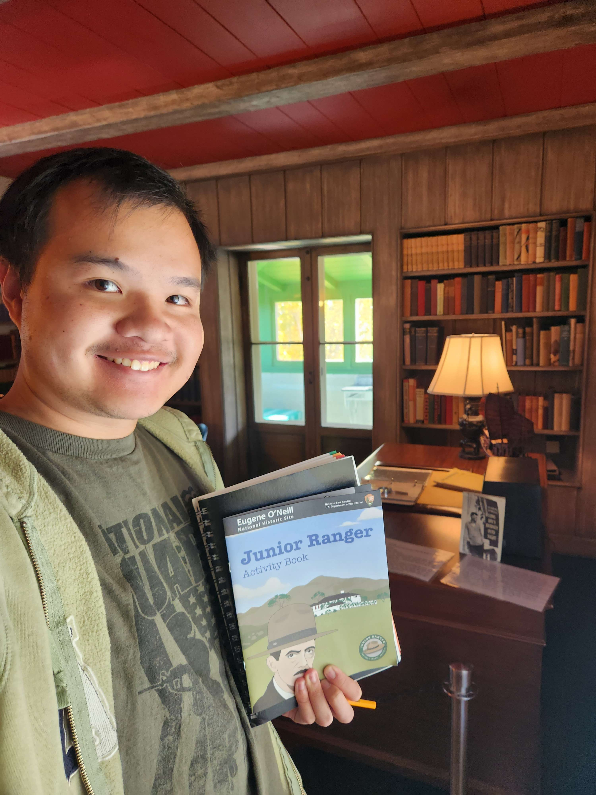
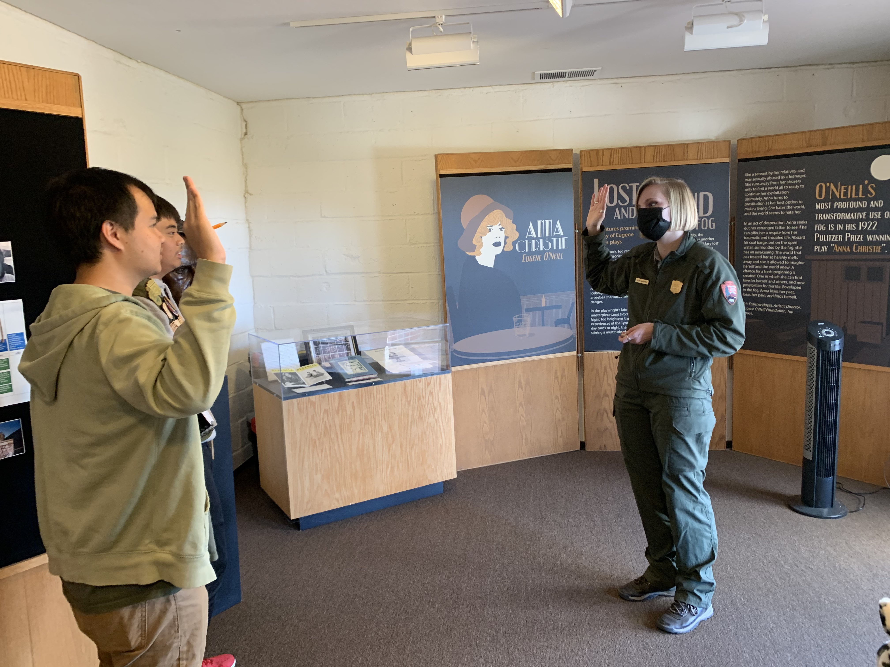
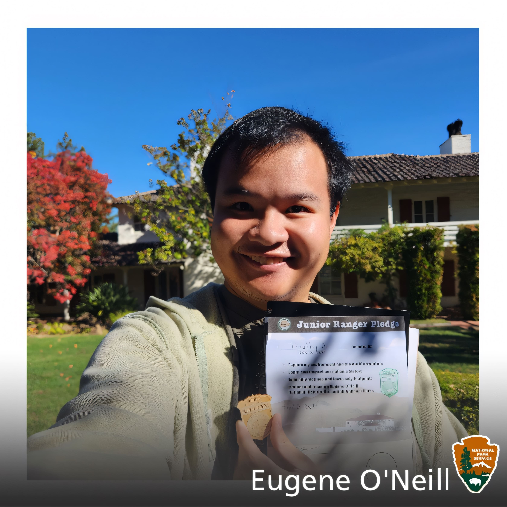

{kind=link}


Give me a one paragraph description of Eugene O' Neil National Historic Site.
The Eugene O'Neill National Historic Site, located in Danville, California, preserves the Tao House, the former home of Nobel Prize-winning playwright Eugene O'Neill. This historic site offers visitors a glimpse into the life and work of one of America's most celebrated playwrights, known for his groundbreaking contributions to American theater. The site includes the playwright's personal effects, manuscripts, and the serene surroundings that inspired some of his most notable works, providing a unique opportunity for visitors to explore the creative process of one of the titans of 20th-century drama.
I couldn't believe I didn't visit Eugene O' Neil's former home any sooner! Located in Danville, it's under an hour drive from San Jose (given without traffic). Tours on Saturdays are first come, first serve, and we went on the very first one at 10 AM! A shuttle takes you from the visitor center in downtown Danville to the property.
Eugene O' Neil's house (the Tao House) is inspired by Taoism, since he was inspired by the tranquility and peace of Chinese philosophers. Inside the house you can see the wall of masks next to the stairs, a piano room, and finally the study, where he writes his playwrights. It is very peaceful, and secluded from the rest of society, making it a place of concentration, but at the same time socially distance oneself from others in the household.
After touring the house, I got my activity book checked by Ranger Hilary, who is really nice! She explained a lot of the lore behind Eugene O' Neil's character, as well as his dilema when he visited the house. Did you know that his daughter (Oona) was married to Charlie Chaplin, but they really didn't get along? Overall, exploring a NHS that features a playwright is fascinating, because his work (including the popular "Long Day's Journey into Night") revolutionzed plays in the 20th century!
To be Uploaded

